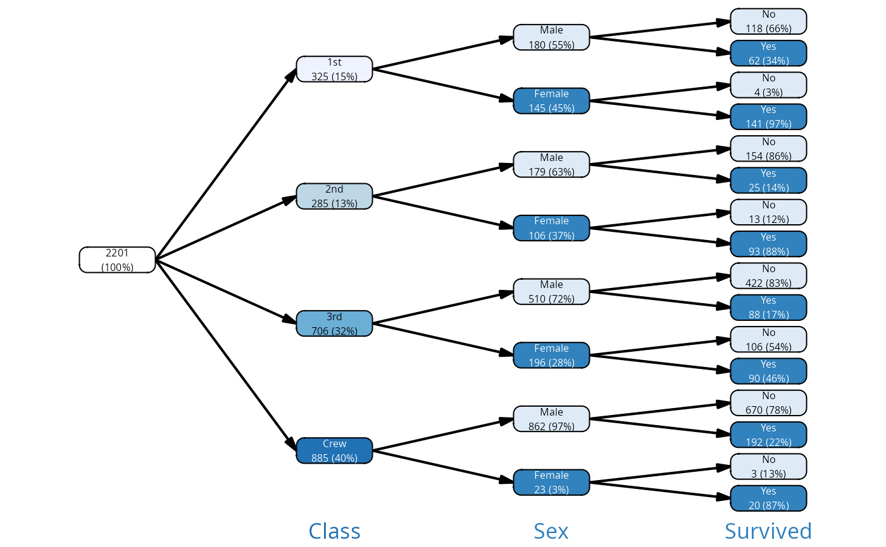
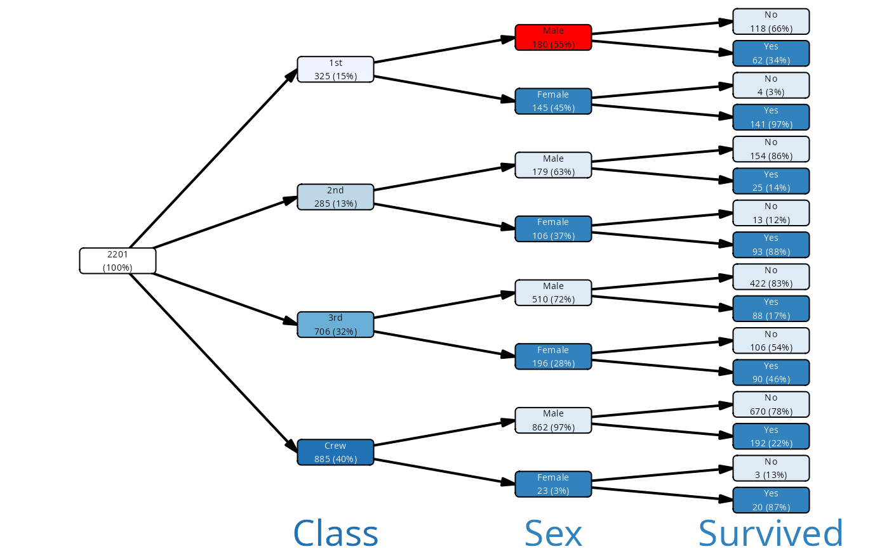
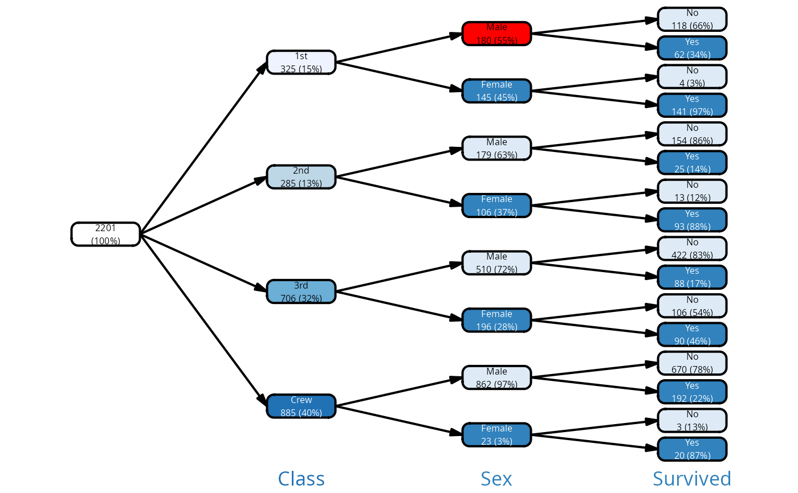
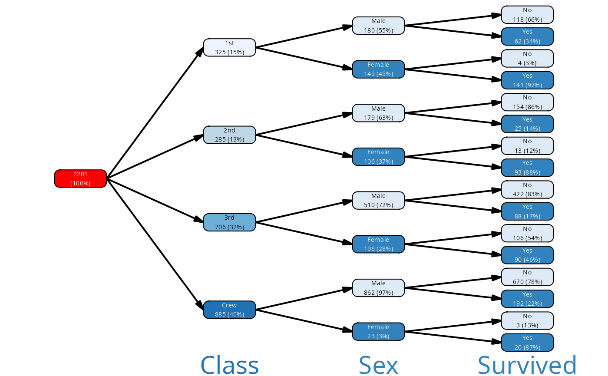
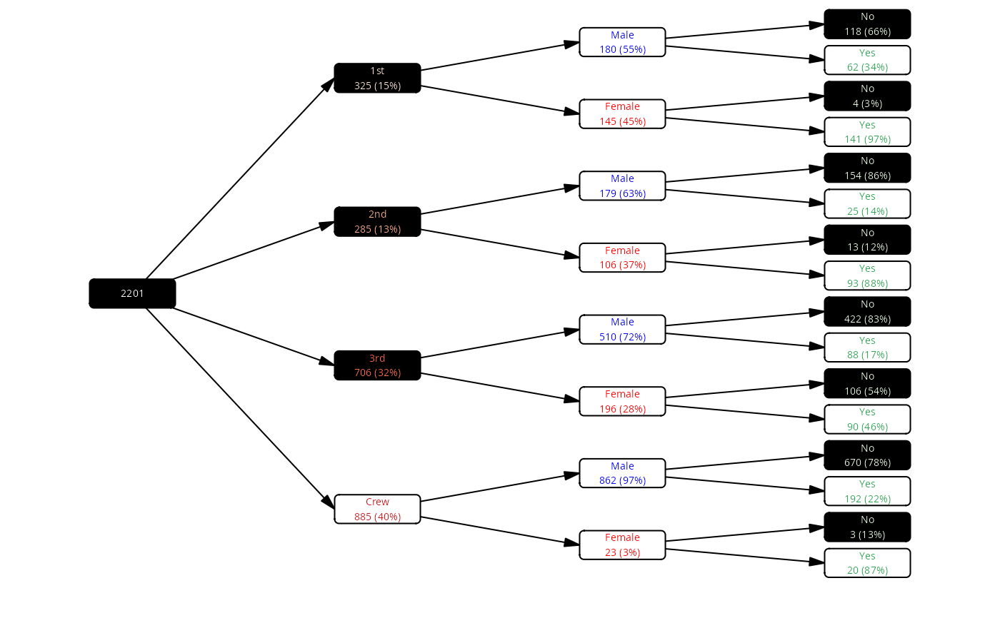

Color palettes for a variable levels
vtree_palette.RdGenerate and add color palettes to vtree objects.
Usage
vtree_palette(
vtree,
palettes = c("Reds", "Blues", "Greens", "Oranges", "Purples"),
var_palette = NULL,
default_color = "white"
)
var_palette(var_levels, pal)
add_palette(
vtree,
palettes = c("Reds", "Blues", "Greens", "Oranges", "Purples"),
na_fill = "white",
na_color = "black",
var_palette = NULL,
what = "fill",
default_color = "white"
)Arguments
- vtree
A vtree object
- palettes
The names of RColorBrewer palettes corresponding to the subsequent columns in the vtree
- var_palette
a named list of named vectors. The var_palette names correspond to the variables; the names of the vectors are the levels of the given variable; the values are colors.
- default_color
default color to use if variable levels from var_palette are missing
- var_levels
a character vector of values to which colors are assigned from a palette
- pal
name of a palette (e.g. "Greens")
- na_fill
text color used for nodes associated with NA values
- what
By default, add_palette() adds a fill color for the nodes and automatically chooses a contrast color for the text. If 'what' is 'color', it adds a text color for the node and automatically chooses a contrast color for the fill.
Value
vtree_palette() returns a character vector of colors for the
levels of the variable. add_palette() returns the vtree object with
the columns fill color, and with additional attribute palette.
Details
add_palette() assigns fill colors to the nodes of a vtree based on the
variable levels. The fill colors are stored in a new column in the nodes
data frame called "fill". If a color column is missing, it will be
added with automatic contrast colors as well, but it will not be
overwritten if present.
It also sets the mapping between colors and variable levels, stored in
the attribute "palette", which is used when showing the legend. If you
modify the fill and color columns manually (without using
add_palette(), you will not change the color code.
If the parameter what is color, then instead of generating a fill
color from the palettes, the function generates a text color and chooses
a contrast fill color automatically.
vtree_palette() returns a color palette for a variable level in a vtree.
The colors are chosen from the RColorBrewer package.
var_palette() generates a series of colors from a palette and assigns
them to the provided character vector.
See also
See contrast_color() for generating white/black contrast
color automatically.
Examples
vt <- vtree_from_freqtable(Titanic, Class, Sex, Survived)
vtree_palette(vt)
#> $Class
#> 1st 2nd 3rd Crew
#> "#FEE5D9" "#FCAE91" "#FB6A4A" "#CB181D"
#>
#> $Sex
#> Male Female
#> "#DEEBF7" "#3182BD"
#>
#> $Survived
#> No Yes
#> "#E5F5E0" "#31A354"
#>
# only blues for all variables!
vt |> add_palette(palettes = "Blues") |> plot()

# same as
plot(vt, palettes = "Blues")
# manipulate color for some of the nodes
vt |> add_palette(palettes = "Blues") |>
# don't prune, just mark the nodes in the mark col
mark(path == "Class:1st/Sex:Male") |>
# color the marked nodes in red
mutate(fill = ifelse(mark, "red", fill)) |>
plot()

# color the NA nodes with red
vt |> add_palette(palettes = "Blues", na_fill = "red") |>
plot()

# males blue, females red; rest automatic
vt |>
add_palette(var_palette =
list(Sex = c(Male = "blue", Female = "Red"))) |>
plot()

# same, but now the text color is generated from the palette
vt |>
add_palette(what = "color",
var_palette = list(Sex = c(Male = "blue", Female = "Red"))) |>
plot()
